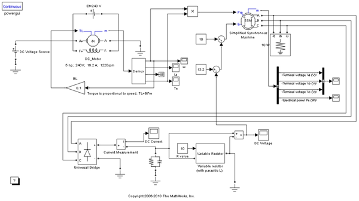

自動車の電気システム
このモデルでは、Simulink® と SimPowerSystems™ を使用して、自動車の電気システムをシミュレートします。
目次
図 1: 自動車の電気システム
システム コンポーネント
シミュレートするシステムは、次のコンポーネントで構成されています。
界磁励磁が一定の他励 DC モーター。 電機子は、DC 電源電圧 (バッテリー定格電圧 240V) から供給され、界磁励磁、したがって電流が一定に保たれるようにするため、モーター速度は、印加される電機子電圧に正比例します。 この配置は、ベルトおよび滑車メカニズムを介してオルタネーター (同期発電機) を駆動する、自動車のエンジンをシミュレートします。 ドライバーが加速すると、オルタネーターの回転速度と同様に、エンジン速度が変化します。 したがって、エンジン速度の変化をシミュレートするために、DC モーターの電機子電圧が変更されます。
DC モーター出力パワー (モーター トルクと角速度 w の積) が入力として同期機ブロックに送られます。
オルタネーターは、3 相同期発電機であり、出力電圧を制御できるように、その界磁電流が調整されます。 これは、単純化した同期機モデルを使用してシミュレートされます。
オルタネーターの 3 相 AC 出力は、自動車バッテリーを充電し、自動車の電気システムのバランスを取るために必要な DC 電圧を提供するために、6 パルス整流器に送られます。
システムの動作
たとえば、始動モーターやワイパー モーターなど、他の負荷がオンになったときにライトが暗くならないように、 DC 電圧は一定に保たれなければなりません。 同様に、A/C ファン モーターの動作中に、ライトがオンになった場合、ファン モーターは減速してはなりません。
エンジン速度が変化した場合や、追加の電気負荷がオンになった場合でも、DC 電圧を一定のままにするには、DC バス電圧をフィードバックし、それに応じて、オルタネーター発生 AC 電圧を調整する必要があります。 次のイベントは、この動作を説明するのに役立ちます。
- 速度変化: シミュレーションの実行中に、入力 DC バッテリー電圧を 240 から約 150 V に下げます。シミュレーションが終了したら、DC バス電圧と DC モーターの速度 w を表示します。 速度は変化しますが、DC バス電圧に変化がないことがわかります。
- 負荷変動: シミュレーションの実行中に、DC 母線に接続されている負荷抵抗器の値を変更します。 DC バスの電圧と電流を表示します。 電流は負荷と共に変化しますが、電圧は (希望どおり) 一定のままです。
- オルタネーター上の電圧制御器が動作していることを示すには、シミュレーションの実行中に、2 番目のアナログ加算器 (+ve 記号が 2 つ付いたもの) で定数を変更します。 AC 電圧と DC 電圧を表示します。変化が表示されます。